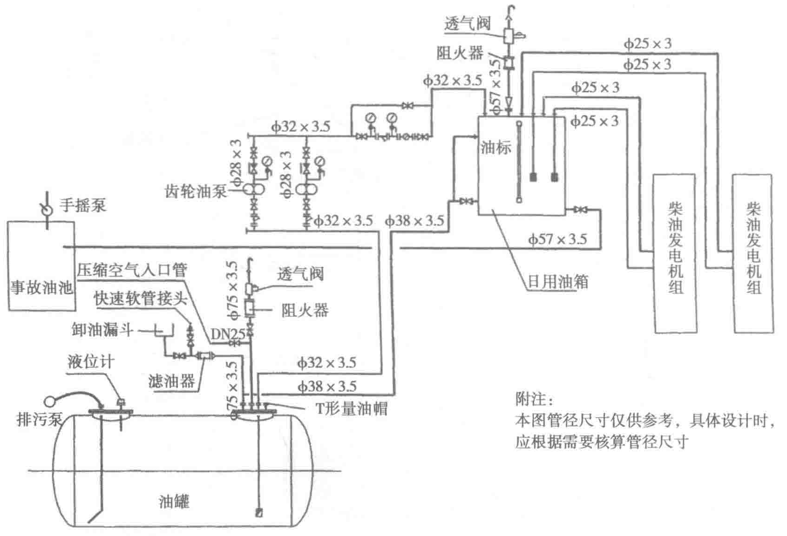

排气噪声的主要成分有以下几种：周期性的排烟口引起的低频脉动噪声、排烟管道内的气柱共振噪声、气缸的亥姆霍兹共振噪声、高速气流通过气门间隙及曲折的管道时所产生的噪声、涡流噪声以及排烟系统在管道内压力波激励下所产生的再生噪声等。随气流速度增加，噪声频率显著提高。
2. 机械噪声
机械噪声主要是发动机各运动部件在运转过程中受气体压力和运动惯性力的周期变化所引起的震动或相互冲击而产生的，其中最为严重的有以下几种：活塞曲柄连杆机构的噪声、配气机构的噪声、传动齿轮的噪声、不平衡惯性力引起的机械震动及噪声。
柴油发电机组强烈的机械震动可通过地基远距离传播到室外各处，然后再通过地面的辐射形成噪声。这种结构噪声传播远、衰减少，一旦形成很难隔绝。
3. 燃烧噪声
燃烧噪声是柴油在燃烧过程中产生的结构震动和噪声。气缸内的燃烧噪声的声压级是很高的，但是，发动机结构中大多数零件的刚性较高，其自振频率多处于中高频区域。因为有时声波传播频率响应不匹配，所以在低频段很高的气缸压力级峰值不能顺利地传出，中高频段的气缸压力级则相对较容易传出。